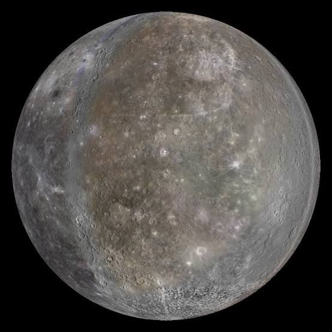
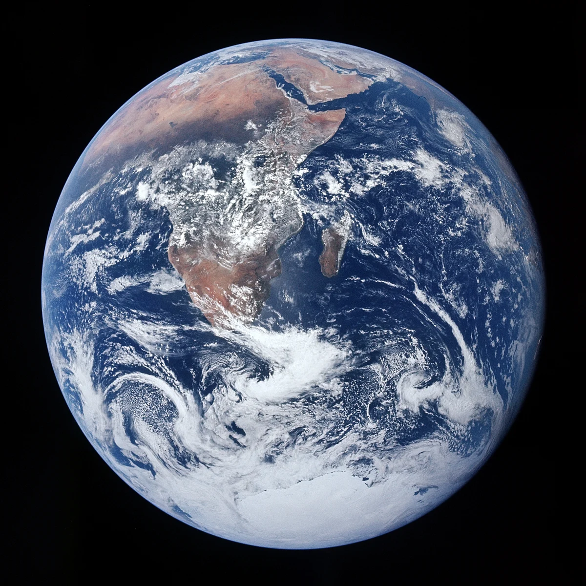

ดาวเคราะห์หิน

ดาวพุธ (Mercury)
ดาวเคราะห์ที่เล็กที่สุด
ดาวพุธเป็นดาวเคราะห์ที่เล็กที่สุดและอยู่ใกล้ดวงอาทิตย์ที่สุด มีพื้นผิวที่มีหลุมอุกกาบาตมากมายเหมือนดวงจันทร์
- ✓ ระยะทางจากดวงอาทิตย์: 57.9 ล้านกม.
- ✓ เส้นผ่านศูนย์กลาง: 4,880 กม.
- ✓ จำนวนดาวบริวาร: 0
- ✓ อุณหภูมิ: -180°C ถึง 430°C
- ✓ วันหนึ่งบนดาวพุธยาวนาน: 176 วันโลก
Photo: Mercury surface by NASA
.jpg)
ดาวศุกร์ (Venus)
ดาวเคราะห์ที่ร้อนที่สุด
ดาวศุกร์มีบรรยากาศหนาแน่นที่สุด ประกอบด้วยก๊าซคาร์บอนไดออกไซด์ 96% ทำให้เกิดปรากฏการณ์เรือนกระจกรุนแรง
- ✓ ระยะทางจากดวงอาทิตย์: 108.2 ล้านกม.
- ✓ เส้นผ่านศูนย์กลาง: 12,104 กม.
- ✓ จำนวนดาวบริวาร: 0
- ✓ อุณหภูมิพื้นผิว: 462°C
- ✓ หมุนรอบตัวเองช้าที่สุด: 243 วัน
Photo: Venus with clouds by NASA

โลก (Earth)
ดาวเคราะห์ที่มีชีวิต
โลกเป็นดาวเคราะห์เดียวที่มีสภาพแวดล้อมเหมาะสมสำหรับชีวิต มีน้ำในสถานะของเหลว บรรยากาศที่มีออกซิเจน และสนามแม่เหล็กป้องกัน
- ✓ ระยะทางจากดวงอาทิตย์: 149.6 ล้านกม.
- ✓ เส้นผ่านศูนย์กลาง: 12,742 กม.
- ✓ จำนวนดาวบริวาร: 1 (ดวงจันทร์)
- ✓ อุณหภูมิเฉลี่ย: 15°C
- ✓ ความเอียงของแกน: 23.5 องศา
Photo: Earth from space by NASA

ดาวอังคาร (Mars)
ดาวเคราะห์แดง
ดาวอังคารมีสีแดงเนื่องจากออกไซด์เหล็ก (สนิม) บนพื้นผิว มีภูเขาไฟที่สูงที่สุดในระบบสุริยะ (โอลิมปัส มอนส์)
- ✓ ระยะทางจากดวงอาทิตย์: 227.9 ล้านกม.
- ✓ เส้นผ่านศูนย์กลาง: 6,779 กม.
- ✓ จำนวนดาวบริวาร: 2 (โฟบอสและดีมอส)
- ✓ อุณหภูมิ: -125°C ถึง 20°C
- ✓ วันหนึ่งบนดาวอังคาร: 24.6 ชั่วโมง
Photo: Mars surface by NASA